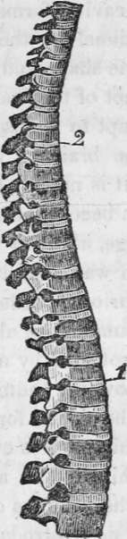
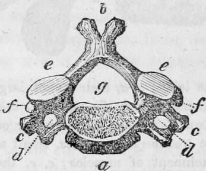
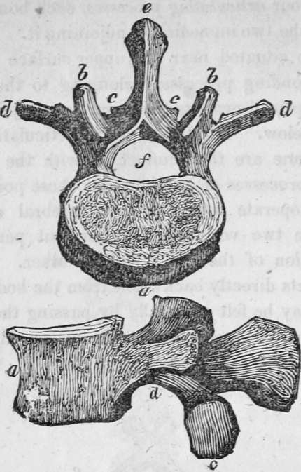

The Human Skeleton. Part 4
Description
This section is from the book "Human Physiology For The Use Of Elementary Schools", by Charles Alfred Lee. Also available from Amazon: Human Physiology, for the Use of Elementary Schools.
The Human Skeleton. Part 4
26. In order to accomplish these various purposes, the back bone, so called, is composed of twenty four distinct bones, or vertebra, from vertere, to turn, as the body turns on them, which are arranged into three classes, the cervical, dorsal, and lumbar. The first seven are the cervical, because they belong to the neck; the next twelve are the dorsal, because they belong to the back; and the last five are the lumbar, because they are situated in the loins. The bones comprising these classes, differ somewhat from each other in shape; a description of the dorsal pieces will prove sufficient for our purpose.
A lateral view of the spine divided into its cervieal, dorsal, and Ium bar portions.
27. Each of these twelve bones consists of a body, four articulating processes, two transverse processes, and one spinous process. The body is formed of soft and spongy bone, which is circular before, flat towards the sides, hollowed out behind into a crescent shape for containing the spinal marrow, and concave above and below for the accommodation of the intervertebral substance. On the side of the bone are situated the four articulating processes, each bone being connected with the two immediately adjoining it. Two of these processes are situated near its upper surface to articulate with corresponding processes belonging to the bone above, and two are placed near its under surface to join with those of the bone below. The two superior articulating processes of one vertebrae are thus connected with the two inferior articulating processes of another, and these points of union not only co operate with the intervertebral cartilages in keeping these two vertebrae together, but permit a slight rotatory motion of the one upon the other. The spinous process projects directly backwards from the body of the vertebrae, and may be felt externally by passing the hand along the spine; the two transverse stand out on either side, and have the ends of the ribs attached to them.
A vertebra of the neek ; a, body of the bone.; b, the spinal process ; c, d, the transverse processes double, showing circular holes for the passage of the vertebral artery; e, e. the superior ; f,f, the articular, or oblique processes; g, the spinal hole for the spinal marrow. The roots of the articular processes are hollowed out above and below into notches; and these, when the bones are fitted together, form apertures on each side of the spine, through which the nerves pass out from the spinal canal.
A vertebra of the loins ; a, a, their bodies, larger and more spongy than those of the others; 6, b, b, the superior ; c, c, c, the inferior articular processes, strong and deep, the superior concave ; the inferior convex; d, d, d, the transverse processes, small and long, serving as levers for the attachment of muscles ; e, e, the spinous processes, strong, horizontal, and flattened at the sides; f, the spinal foramen.
29. The vertebrae, as I have stated, are net in contact, but separated by a considerable interval, which is filled by a peculiar gristly substance of a highly elastic nature, which is pressed out from betwixt the bones, and therefore permits them to approach, and play a little in the motions of the body. This compressible cushion of cartilage and ligament serves indeed the triple purpose of uniting the bones to each other, of diminishing and diffusing the shock in walking or leaping, and of admitting a greater extent of motion than if the bones were in more immediate contact. These separate vertebrae are firmly bound to each other in such a way as to admit of flexion and extension, and a certain degree of rotation, while by their solidity and firm attachment to each other, great strength is secured.
29. We can now readily perceive how great the influence of these twenty four joinings must be in giving elasticity to the whole column, and how much this must tend to the protection of the brain. Indeed, were it not for the interposition of this elastic material, every motion of the body would produce a jar to the delicate texture of the brain, and we should suffer almost as much in alighting on our feet, as in falling on our head.
30. But there is another very curious provision for the protection of the brain, and that is the curved form of the spine. By looking at the cut, you see that it is shaped like an italic. Now, suppose it were straight, and stood perpendicularly, it is evident that when we alighted on our feet it would recoil with a sudden jerk, like a straight steel spring pressed between the hands, from its extremities. In such a case, the weight bearing equally, the spine would neither yield to one side or the other, and consequently, there would be a resistance, from the pressure on all sides being balanced. But shaped as it is, we find it constantly yielding in the direction of its curves ; the pressure is of necessity more on one side of the column than on the other, and its elasticity is immediately in operation without a jerk. It yields, recoils, and so forms the most perfect spring, admirably calculated to carry the head without jar or injury of any kind.
31. When we reflect that the spinal column is composed of so many separate parts, so nicely adapted to each other, and kept in place by such a complicated array of ligaments, tendons, and muscles, we might expect that injuries and diseases of the structure would be very frequent. But fortunately this is not the case, except where undue restraint and confinement are imposed ; and it is only within a few years since a change has been introduced into the system of education for young ladies, that the spine disease, so called, has become a common affection.
Continue to:
Tags
humans, anatomy, skeleton, bones, physiology, organs, nerves, brain